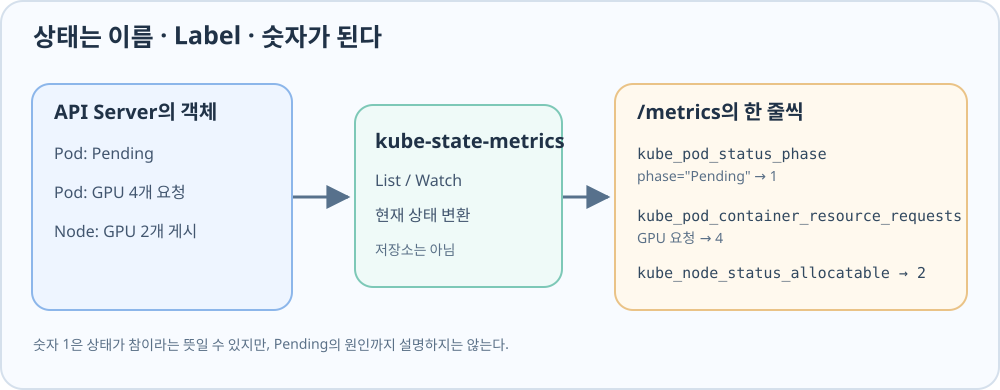

GPU 4개를 요청한 gpu-observability-pending Pod가 아직 배치되지 않았다고 하자. 두 GPU Worker는 각각 GPU 2개를 게시하고 있다. 이 상황을 여러 객체에 걸쳐 읽으려면 Node의 자원량, Pod의 요청량, Pod의 현재 상태를 같은 형식의 숫자로 볼 수 있어야 한다. 그 숫자를 제공하는 구성요소가 kube-state-metrics다.
kube-state-metrics의 역할
Kubernetes API Server에는 Node와 Pod의 상태가 객체로 저장된다. kube-state-metrics는 API Server에서 객체를 처음 읽고(List), 이후 변경을 관찰(Watch)해 현재 상태를 /metrics에 노출한다. 이 메트릭을 API Server에 다시 보내거나 과거 값을 저장하지는 않는다. Prometheus는 나중에 /metrics를 반복해서 수집해 시간에 따른 변화를 보관한다.

메트릭 한 줄 읽기
/metrics의 한 줄은 메트릭 이름 → Label → 숫자 값으로 읽는다. 아래 예시는 이해에 필요한 Label만 표시했다.
kube_node_status_allocatable{node="gpu-lab-m03",resource="nvidia_com_gpu"} 2
이름은 Node가 Pod에 제공할 수 있다고 게시한 자원량을 뜻한다. node는 어느 Node인지, resource는 어떤 자원인지를 고른다. 마지막 2는 그 Node의 GPU Allocatable이 2개라는 값이다. Pod 명세의 자원 이름 nvidia.com/gpu는 이 메트릭의 resource Label에서 nvidia_com_gpu로 표현된다.
Node의 GPU 제공량
두 Worker의 kube_node_status_allocatable{resource="nvidia_com_gpu"} 값이 각각 2라면, 두 Node가 각각 Pod에 제공할 수 있다고 게시한 GPU가 2개라는 뜻이다. 이 값은 Node별 숫자다. CPU와 Memory도 같은 메트릭에서 resource Label을 달리해 나타난다.
gpu-lab-m02 → GPU Allocatable 2
gpu-lab-m03 → GPU Allocatable 2
컨테이너의 GPU 요청량
이제 Node가 아닌 Pod 명세를 본다. kube_pod_container_resource_requests{resource="nvidia_com_gpu"}는 컨테이너가 요청한 GPU 개수를 나타낸다. namespace, pod, container Label로 요청 주체를 구분한다.
kube_pod_container_resource_requests{namespace="gpu-resource-lab",pod="gpu-observability-pending",resource="nvidia_com_gpu"} 4
이 예시에서는 gpu-observability-pending이 GPU 4개를 요청한다. 앞서 본 Node별 값은 각각 2개다. 따라서 클러스터 전체의 GPU 숫자를 더하기 전에 한 Pod의 요청을 한 Node가 충족할 수 있는지를 봐야 한다. 이미 배정된 gpu-request-one의 요청 값이 1로 보이더라도 그것은 또 다른 컨테이너의 명세상 요청량이며, 실제 GPU 사용률을 뜻하지 않는다.
Pod의 배치 상태
GPU 요청량만으로는 Pod가 실제로 배치됐는지 알 수 없다. kube_pod_status_phase는 Pod의 현재 Phase를 phase Label별 0 또는 1로 표현한다.
kube_pod_status_phase{namespace="gpu-resource-lab",pod="gpu-observability-pending",phase="Pending"} 1
kube_pod_status_unschedulable{namespace="gpu-resource-lab",pod="gpu-observability-pending"} 1
첫 줄은 이 Pod가 현재 Pending이라는 뜻이다. 다른 Phase, 예를 들어 Running에 대한 값은 0일 수 있다. 두 번째 줄은 Scheduler가 이 Pod를 배치할 수 없다고 표시했다는 뜻이다. 둘을 함께 읽으면 요청한 Pod가 아직 배치되지 않았고, Scheduler도 배치 불가로 보고 있다는 상태까지 알 수 있다.
실행된 Pod의 상태
반대로 배치되어 실행 중인 gpu-request-one을 볼 때는 kube_pod_status_ready{condition="true"}와 kube_pod_container_status_restarts_total이 유용하다. 전자는 Pod의 Ready 조건이 참이면 1이고, 후자는 컨테이너의 누적 재시작 횟수다. 예를 들어 값이 각각 1과 0이면 Pod는 Ready로 보고되고 컨테이너 재시작 기록은 없다는 뜻이다.
숫자 해석의 경계
Allocatable=2는 현재 GPU가 두 개 비어 있다는 뜻이 아니다. Node가 Pod에 제공할 수 있다고 게시한 총량이며 Pod가 배정될 때마다 감소하는 잔여량도 아니다. 배치 여유를 판단하려면 같은 Node에 이미 배정된 Pod의 요청량을 함께 봐야 한다. Pending 또는 종료된 Pod의 요청 명세도 메트릭에 보일 수 있으므로 모든 요청 값을 단순 합산해 Allocatable에서 빼는 것 역시 정확한 잔여량 계산이 아니다.
Pending=1과 unschedulable=1도 배치 실패 원인을 문장으로 설명하지는 않는다. GPU 부족인지, Node 선택 조건이나 Taint 때문인지는 Scheduler Event를 읽어야 한다. Ready=1과 재시작 0은 Pod 상태이지 GPU 계산 성공이나 LLM 응답 속도의 증거가 아니다.
같은 kube-state-metrics에서 Deployment의 복제본 수를 읽는 방법은 Deployment Replica 메트릭 읽기에서 별도로 살펴본다.
kube-state-metrics 설치
아래 명령은 Helm Chart 저장소를 준비하고 observability Namespace에 kube-state-metrics를 설치한다. 이미 설치돼 있다면 반복할 필요가 없다.
helm repo add prometheus-community https://prometheus-community.github.io/helm-charts
helm repo update
helm upgrade --install kube-state-metrics prometheus-community/kube-state-metrics \
--version 8.5.0 --namespace observability --create-namespace
원본 메트릭 조회
설치된 kube-state-metrics의 /metrics를 직접 읽으면 앞서 설명한 숫자가 실제로 어떻게 노출되는지 볼 수 있다. 아래 kubectl get --raw는 API Server의 Service Proxy를 통해 응답을 받고, rg는 관심 있는 메트릭 이름의 줄만 남긴다.
kubectl get --raw \
'/api/v1/namespaces/observability/services/http:kube-state-metrics:8080/proxy/metrics' \
| rg '^(kube_node_status_allocatable|kube_pod_container_resource_requests|kube_pod_status_phase|kube_pod_status_unschedulable|kube_pod_status_ready|kube_pod_container_status_restarts_total)' \
| rg 'gpu-lab-m02|gpu-lab-m03|gpu-observability-pending|gpu-request-one'
이 명령은 Prometheus가 저장한 과거 데이터가 아니라 kube-state-metrics가 현재 노출하는 원본을 읽는다.
현재 상태를 읽은 다음에는 Prometheus에서 이 값을 시간에 따라 수집하고 질의하는 방법으로 이어진다.